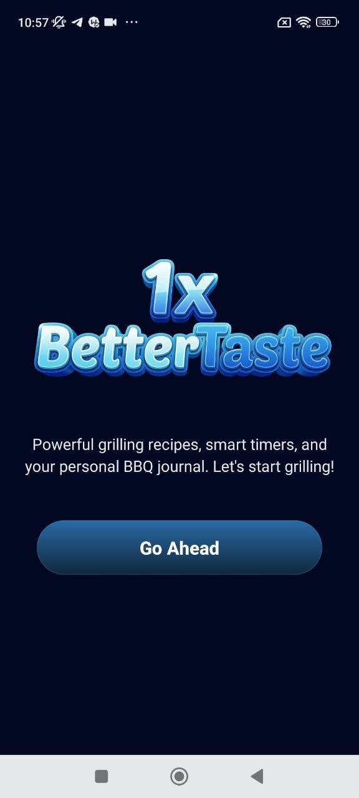
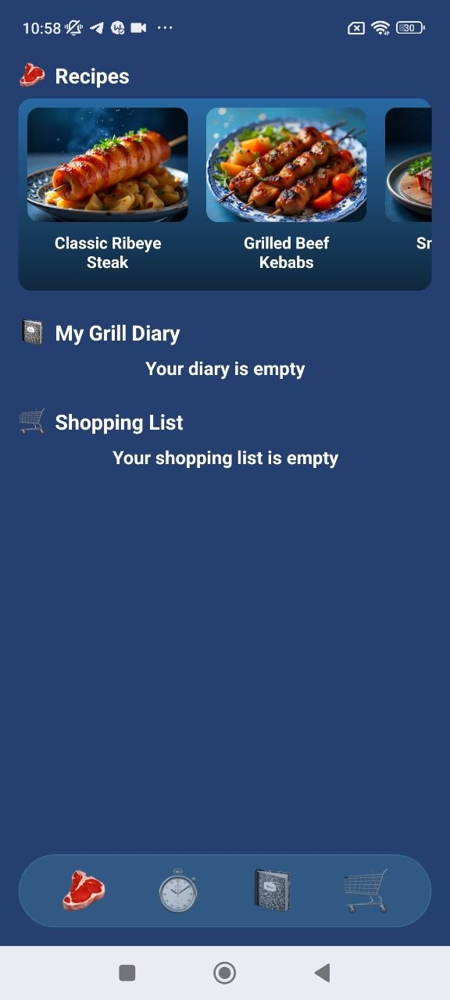
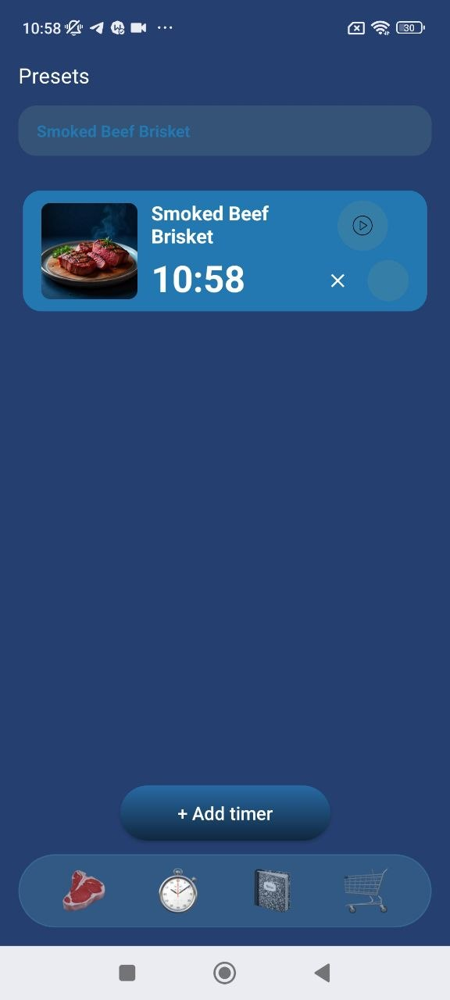
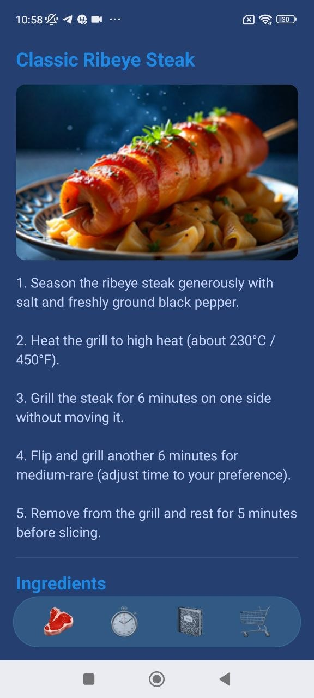
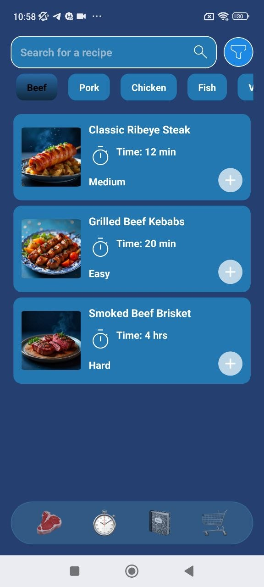
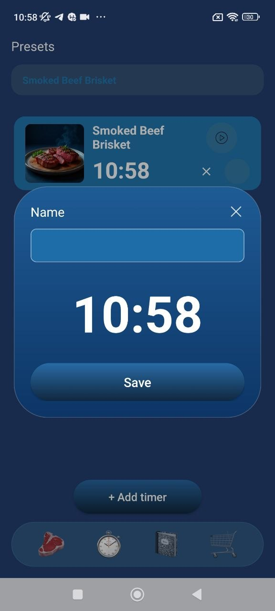
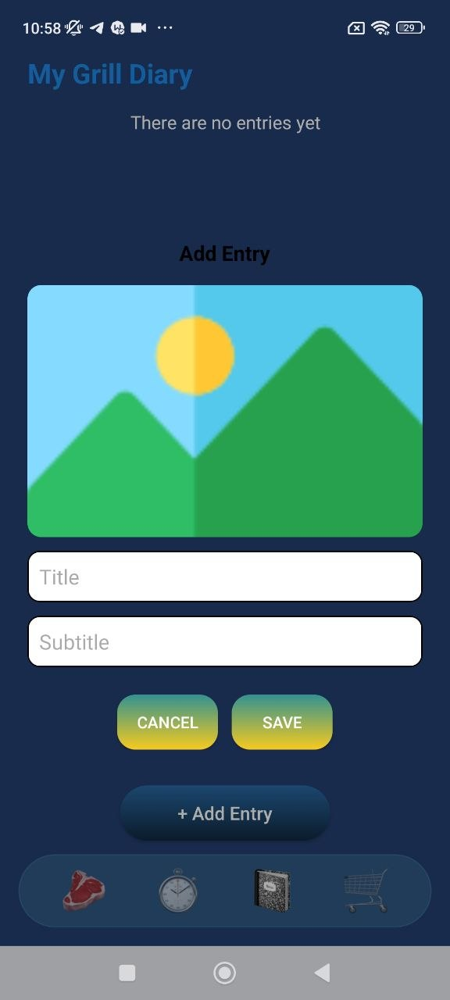

Recipes • timers • grill diary
0
main utility zones inside the app
0
main screens featured on this page
0
single place for smarter grilling
Take your grilling routine from guesswork to control.
4ra Sport Nutrition combines recipe discovery, cooking timers, grill diary tools, and practical kitchen-style workflows into one smooth mobile experience built for food lovers and home grillers.
Recipe ideas
Cooking timers
Grill diary
Cooking mode
Recipes + timer + notes
Best for
home grillers and meal planners
Recipe browser
Preset timers
Grill diary

Style
Fresh recipe-tech landing
Main use
Grilling workflow and timing
Feeling
Practical, clean, modern
Core features
A cooking utility app that feels organized and visual
This landing page keeps only the strongest product moments and uses a cleaner utility layout instead of repeating too many screenshot blocks.
Live preview
Recipe Home
The home screen combines featured recipes, diary access, and a shopping-list area into one easy entry point.

01
Home
A single dashboard for grilling essentials
Recipes, diary, and shopping flow are grouped into a practical home screen instead of feeling scattered.
02
Search
Recipe discovery is fast and visual
Search, categories, cooking time, and dish cards make it easier to choose what to grill next.
03
Recipe
Recipe pages are built for real cooking use
Large food imagery and step-by-step structure make the cooking process easier to follow.
04
Timer
Timer tools turn recipes into action
Instead of only showing recipes, the app supports actual cooking execution with timing tools.
05
Preset
Save custom timer presets quickly
Preset creation helps repeat successful cooking results more easily next time.
06
Diary
Keep your grilling sessions documented
Diary tools help transform the app from a recipe viewer into a more personal cooking companion.
Product flow
From recipe inspiration to real cooking execution
This site uses a recipe-journey flow: discover, inspect, time, and save your session.
Step 01
Start from a clean grilling entry point
The welcome screen sets the tone and positions the app as a focused companion for BBQ and grilling sessions.
Step 02
Discover dishes and inspect recipe details
Recipe browsing and detail screens help users choose something to cook and immediately understand the cooking process.


Step 03
Use timers to stay in control while cooking
Timer and preset flows add a real practical layer beyond simple recipe browsing.


Step 04
Save the session in your grill diary
Diary tools give the product a more personal feel by letting users record what they cooked and how it went.

Reviews
Made for people who actually want to cook, not just browse
Sample review cards for the landing page layout.
★★★★★
“I like that it mixes recipes with timers. It feels more useful than a basic food inspiration app.”
Alex K.
Home griller
★★★★★
“The timer preset flow is a smart addition. It helps bring real structure into longer cooking sessions.”
Ryan M.
Weekend BBQ fan
★★★★★
“The blue design feels clean and modern, and the recipe cards are very easy to scan.”
Chris P.
Casual cook
Start grilling smarter
Download 4ra Sport Nutrition and keep recipes, timers, and notes in one place.
Discover dishes, manage timing, and build your own grill diary with a cleaner, more useful mobile cooking workflow.